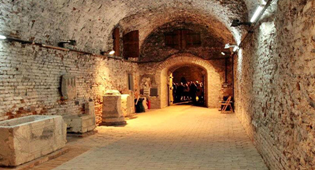
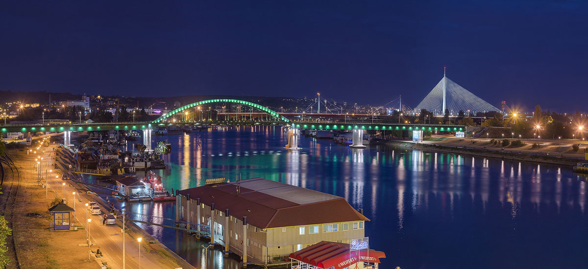
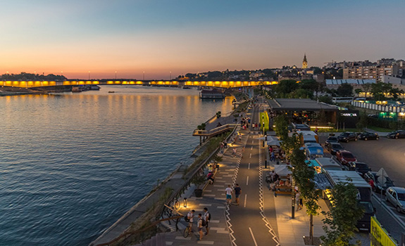
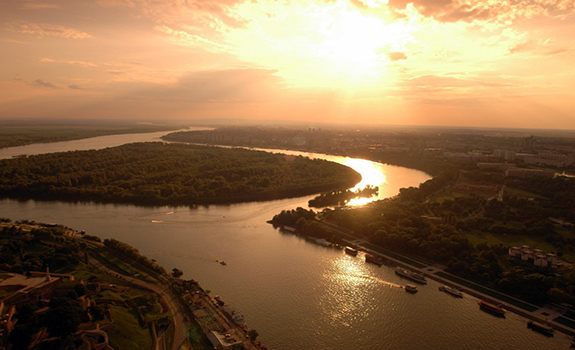

We are a team of licensed, professional tour guides who have worked together for almost ten years and recently decided to put en effort into making some authentic Belgrade tours which will make every visitor fall in love with Serbian capital. We have created several out-of-the-ordinary tours that will enable you feel the unique Belgrade spirit and get to know the White City from a completely different perspective! You will hear some amazing stories about history of the city, its culture, people and tradition, but we will also take you to must-see places which will make you experience the very best of it. In addition, accordingly to your personal preferences we will be thrilled to organize for you tailor-made packages which will make you explore the city just the way you want it! So, let the journey begin!
Apart from being no 1 when it comes to nightlife and hospitality of its citizens, there is so much you do not know about White City! Did you know that the whole underground city lies beyond the famous landmark of the city, Kalemegdan fortress? What's more, facts say that it's not only under the fortress, but also under the whole historical part of the city center? One of the tours we offer includes visit to major underground sites in the Belgrade fortress, such as Roman Well, Barutana and Army Bunker! And that's not all! Stories you will hear will make you go back in time and visualize how it used to be in the past! From the fortress to the banks of the rivers! Another "must" is a cruise on the Sava and Danube rivers! We suggest to do it during sunset because the impression you get will be unforgettable! We will take you to visit major highlights of the city, such as Temple of Saint Sava, Saint Michael church, House of Flowers, Kneza Miloša street, Terazije and Slavija Square and much more! There is also a large choice of museums, and we can make you a tailor-made tour which will make you experience the visit in an authentic and unique way! One of them is certainly Nikola Tesla tour! But enough of the talk, let's start the adventure together!
From numerous underground tunnels, hundreds of unusual paths, walled rivers, countless limestone walls, we have chosen the most interesting secret keepers for you to explore. Many legends surround the Roman Well, one of Belgrade’s most mysterious attractions, built at the beginning of the 18th century, during the baroque reconstruction of the fortress. The depth of the well is 60 meters and the bottom is below the bottom of Sava River.
Barutana was built during the Austrian empire. The goal was to make a safe powder shelter, a place protected from the enemy artillery. You will have the chance to touch and explore the walls of Barutana that was built as part of Kalemegdan and served as the defense against Turkish Empire.
The underground tunnels bring you to Army bunker that dates from different times such as the Inform Bureau – a communist information bureau of East Europe.
We invite you to discover Serbian capital – Belgrade, whose history dates back to at least 7000 BC. Named „White City“ after the massive walls of its open-air historical museum – Belgrade Fortress, it is an ancient city with a charming mix of medieval and modern architecture. Stroll along its lively streets to meet Belgrade’s cultural and historical wealth; get to know its legendary reputation of a fantastic host in remarkable world-class restaurants. Visit some of the best shops in numerous shopping malls or simply enjoy a cup of coffee with Belgrade’s panorama over the confluence of the Sava and Danube rivers. Enjoy in sightseeing of Serbia capital which gives the first impression of the most important Belgrade sights.
Nikola Tesla museum - is a unique institution of science and culture in Serbia and in the world. It is the only museum in the world which preserves the original and personal inheritance of Nikola Tesla. Nikola Tesla, American scientist of Serbian origin, gave his greatest contribution to science and technological progress of the world as the inventor of the rotating magnetic field and of the complete system of production and distribution of electrical energy based on the use of alternate currents.
Nikola Tesla restaurant - located in the very center of the city, on the Sava River shore, this original place is inspired by our famous scientist Nikola Tesla. Beside great atmosphere, guests of the restaurant will enjoy in gastronomical specialties that are based on the cuisine of the places where Nikola Tesla used to live. The restaurant also contains the unique exhibition of Nikola Tesla work.
Confluence of two gorgeous rivers Danube and Sava nourish its most valuable pearl – Belgrade. That is why everybody says that most beautiful side of Belgrade can be seen from its rivers.
No trip to Belgrade would be complete without exploring the riverside for a taste of life in Serbia’s capital. The Sava, the longest river in the Balkans, is untamed and capricious. The large and mighty Danube is known to most. The second longest river in Europe, the Danube connects Belgrade with world seas. Nestled at the confluence of the Danube and Sava Rivers, Belgrade is ranked third among the world cities with the most beautiful location.
During boat cruise you will see Belgrade’s best kept secrets: confluence where Mighty Danube embraces his companion Sava, view on Kalemegdan fortress and old city illuminated by hundreds of lights, while passing below 7 bridges on Sava River which connect old and modern part of Belgrade, and make it as one. During cruise lunch or dinner with candle lights can be served.
  Address: Petra Lekovića 65, 11000 Belgrade
Mobile: + 381 xxx xxx xxx
E-mail: office@discoverbelgrade.com
Working hours: Monday - Saturday: 09:00-18:00h